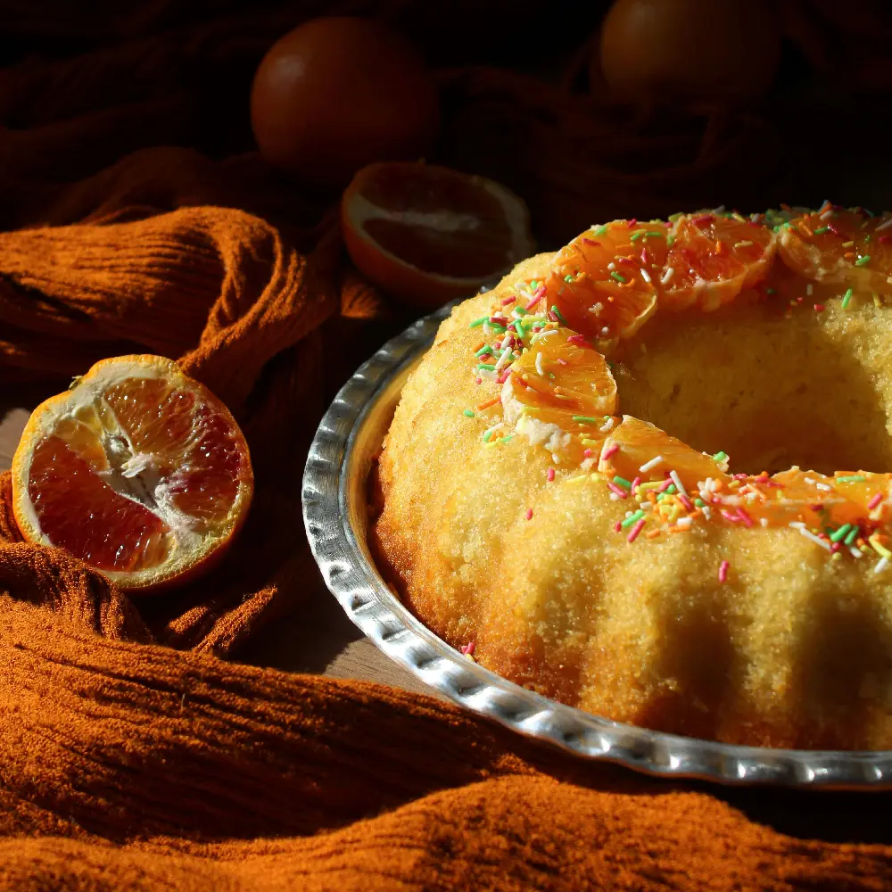

ΔΥΟ
Ελαιόλαδο
Η ελιά, με καταγωγή από τη Μεσόγειο, εμφανίστηκε πιθανότατα πριν από 60.000 χρόνια στην άγρια μορφή της. Η λέξη «oil», που εμφανίστηκε στις αρχές του 12ου αιώνα, προέρχεται από το λατινικό oleum — το ελαιόλαδο. Το δέντρο είναι σύμβολο αιωνιότητας, ειρήνης και δύναμης.
Στα οφέλη του χρυσού υγρού συγκαταλέγονται τα ωμέγα-9 και οι φαινολικές ενώσεις με αντιοξειδωτική δράση. Στην κουζίνα αναδεικνύει τις σαλάτες, δίνει χαρακτήρα στον πουρέ και στο αρνί στον φούρνο, και ξυπνά τον ουρανίσκο με πρόβειο γιαούρτι και μέλι.
Από την ελιά στο ελαιόλαδο. Η συγκομιδή μας γίνεται από τον Νοέμβριο ως τον Ιανουάριο. Τρία στάδια — το άλεσμα των ελιών με το κουκούτσι, η πίεση του πολτού και η καθίζηση για να διαχωριστεί το λάδι από το φυτικό νερό — συνδυάζουν υπομονή και τεχνογνωσία. Χρειάζονται περίπου 5 κιλά ελιές για 1 λίτρο λάδι.
Πώς να διαλέξετε ένα καλό λάδι. Αναζητήστε την ένδειξη «εξαιρετικό παρθένο», που σημαίνει οξύτητα κάτω από 1%. Όσο υψηλότερη η οξύτητα, τόσο χαμηλότερη η ποιότητα. Προτιμήστε λάδι συγκεκριμένης σοδειάς: είναι η απόδειξη ότι δεν πρόκειται για συνδυασμό δύο χρονιών ούτε για μείγμα λαδιών από διαφορετικές χώρες.
Πώς να το φυλάξετε. Κρατήστε το σε δροσερό μέρος (15–20°C) και μακριά από το φως. Γι’ αυτό επιλέξαμε ένα κομψό μπουκάλι αλουμινίου που το προστατεύει τέλεια. Οι ελιές μας προέρχονται αποκλειστικά από τον ελαιώνα του κτήματός μας στην Πετροθάλασσα και το λάδι πωλείται απευθείας από τον παραγωγό στον καταναλωτή, χωρίς μεσάζοντες. Η γεύση του είναι γλυκιά και βελούδινη, με μια νότα φρεσκάδας.
ΣΥΝΤΑΓΗ
Κέικ με ελαιόλαδο και πορτοκάλι
- 70 ml ελαιόλαδο
- 2 βιολογικά πορτοκάλια
- 1 φλιτζάνι χυμό πορτοκαλιού
- 5 g μπέικιν πάουντερ
- 75 g αλεσμένα αμύγδαλα
- Λίγους στήμονες κρόκου (σαφράν)
- 1/2 κουτ. γλυκού αλάτι
- 3 αυγά
- 80 g αλεύρι
- 1 πρέζα αλάτι
- 150 g ζάχαρη
- 2 κουτ. σούπας ανθόνερο
- Προαιρετικά: 3 σταγόνες αιθέριο έλαιο γλυκού πορτοκαλιού
Προθερμάνετε τον φούρνο στους 180°C. Ανακατέψτε τον κρόκο με το ελαιόλαδο. Ξύστε τη φλούδα των πορτοκαλιών, καθαρίστε τα ωμά, αφαιρέστε τα κουκούτσια και πολτοποιήστε τα, και έπειτα προσθέστε το λάδι με τον κρόκο. Προσθέστε τα αυγά ένα ένα, μετά τη ζάχαρη και το ανθόνερο. Σε ένα μπολ ανακατέψτε το αλεύρι, το μπέικιν πάουντερ, τα αλεσμένα αμύγδαλα και το αλάτι και ενσωματώστε τα στο μείγμα. Λαδώστε και αλευρώστε μια φόρμα για κέικ. Ψήστε στους 180°C για 30 λεπτά, έπειτα σκεπάστε με αλουμινόχαρτο, χαμηλώστε στους 160°C και ψήστε για άλλα 30 λεπτά — μια οδοντογλυφίδα στο κέντρο πρέπει να βγαίνει στεγνή.
